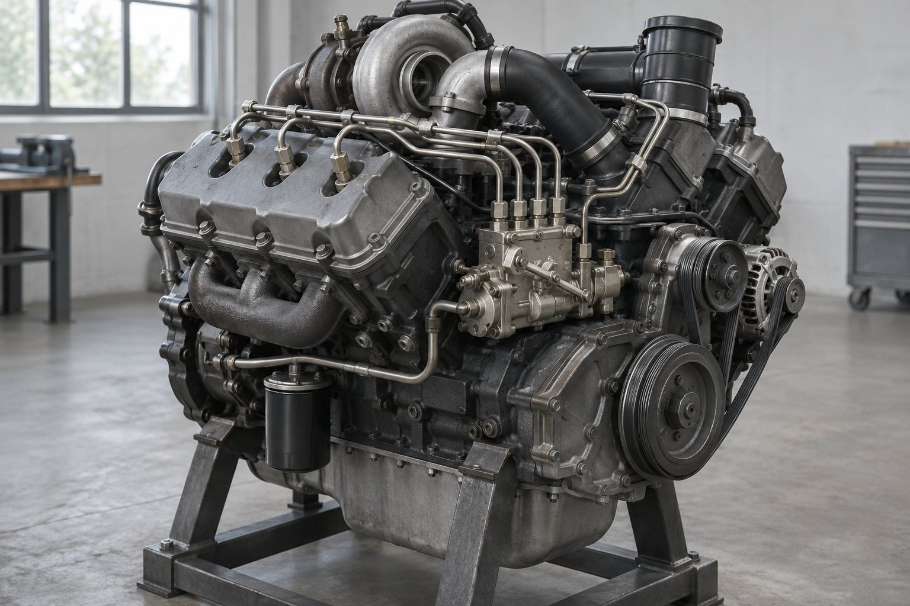

Двигун 1Д20: ремонт та обслуговування.
Для обговорення ремонту або підбору деталі важливі повне маркування та комплектація конкретного агрегату.
Підготувати зверненняЩо підготувати
Повідомте повний індекс двигуна, назву техніки або установки, опишіть несправність чи потрібну деталь. За можливості підготуйте фото таблички та вузла, дані про напрацювання й попередні ремонти.
Уточнення щодо ремонту
Конструкція та режими роботи двигунів 1Д20, 3Д20 і 5Д20 відрізняються. Можливість робіт, випробувань і підбору ущільнень для конкретного виконання потрібно узгодити окремо.
Опис загального процесу ремонту наведений на сторінці послуги. Він не означає, що кожна операція доступна для будь-якої модифікації.
Як обговорюється ремонт1Д20 у складі ДГМ-100
Керівництво дизель-генератора ДГМ-100 описує установку з двигуном 1Д20. Наведені дані стосуються виконання в цьому керівництві; паспорт конкретного двигуна потрібно звірити окремо.
- Циліндри
- 6, V-подібне розташування
- Робочий цикл
- Чотиритактний дизель
- Охолодження
- Рідинне
Історичне технічне джерело не підтверджує перелік ремонтних операцій або сумісність деталей TIR Service.
Джерело: керівництво ДГМ-100 ↗Як обговорити ремонт 1Д20
Повідомте точне маркування, назву техніки та що саме турбує. За можливості підготуйте фото таблички, відомості про напрацювання й попередні ремонти. Це допоможе визначити наступні кроки для вашого агрегату.
За описом підприємства, ремонт може включати розбирання, очищення, вимірювання деталей, відновлення або заміну несправних компонентів і складання. Склад робіт погоджується після оцінювання двигуна.
Деталі та умови
Для підбору прокладки, гумового кільця чи ремкомплекту потрібні модель і модифікація, вузол та, за наявності, артикул або фото. Сумісність і наявність перевіряються окремо.
Вартість і строк залежать від стану двигуна та потрібних деталей. Умови діагностики, випробувань і гарантії узгоджуються для конкретного замовлення.
Як проходить ремонт ↗